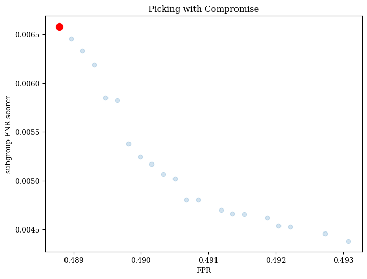

Fair Classification on Adult Dataset¶
[1]:
from pymoo.core.parameters import get_params
[2]:
import copy
import pytest
import pandas as pd
import matplotlib.pyplot as plt
%matplotlib inline
from fomo import FomoClassifier
from sklearn.preprocessing import StandardScaler
from sklearn.linear_model import LogisticRegression
from sklearn.model_selection import train_test_split
from sklearn.pipeline import Pipeline
from sklearn.metrics import roc_auc_score, average_precision_score
from pmlb import pmlb
import fomo.metrics as metrics
from pymoo.algorithms.moo.nsga2 import NSGA2
from pymoo.algorithms.moo.nsga3 import NSGA3
from pymoo.util.ref_dirs import get_reference_directions
dataset = pmlb.fetch_data('adult')
# dataset = dataset.sample(n=2000)
X = dataset.drop('target',axis=1)
y = dataset['target']
Xtrain,Xtest, ytrain,ytest = train_test_split(X,y,
stratify=y,
random_state=42,
test_size=0.5
)
ss = StandardScaler()
Xtrain = pd.DataFrame(ss.fit_transform(Xtrain), columns=Xtrain.columns, index=ytrain.index)
Xtest = pd.DataFrame(ss.transform(Xtest), columns=Xtest.columns, index=ytest.index)
groups = ['race','sex']
[3]:
from sklearn.metrics import make_scorer, accuracy_score
from fomo.problem import MLPProblem
est = FomoClassifier(
estimator = LogisticRegression(),
accuracy_metrics=[make_scorer(metrics.FPR)],
fairness_metrics=[metrics.subgroup_FNR_scorer],
verbose=True,
problem_type=MLPProblem
)
est.fit(Xtrain,ytrain,protected_features=groups, termination=('n_gen',100))
running 8 processes
groups ['race', 'sex']
number of variables: 91
number of objectives: 2
==========================================================
n_gen | n_eval | n_nds | eps | indicator
==========================================================
1 | 100 | 1 | - | -
2 | 200 | 1 | 0.000000E+00 | f
3 | 300 | 1 | 0.0034228992 | ideal
4 | 400 | 2 | 1.0000000000 | ideal
5 | 500 | 3 | 0.8146306973 | ideal
6 | 600 | 3 | 0.000000E+00 | f
7 | 700 | 2 | 4.2000000000 | ideal
8 | 800 | 4 | 0.3971170605 | ideal
9 | 900 | 3 | 0.3057606609 | ideal
10 | 1000 | 4 | 0.1323133137 | f
11 | 1100 | 6 | 0.4152670028 | ideal
12 | 1200 | 2 | 1.7142857143 | ideal
13 | 1300 | 5 | 0.4171185424 | ideal
14 | 1400 | 7 | 0.0967741935 | ideal
15 | 1500 | 6 | 0.1162790698 | ideal
16 | 1600 | 8 | 0.0717071378 | f
17 | 1700 | 6 | 0.0639174660 | f
18 | 1800 | 7 | 0.1820967625 | ideal
19 | 1900 | 7 | 0.1602887731 | ideal
20 | 2000 | 6 | 0.0779889666 | f
21 | 2100 | 4 | 0.0400000000 | ideal
22 | 2200 | 4 | 2.3993187937 | nadir
23 | 2300 | 3 | 0.4210526316 | ideal
24 | 2400 | 6 | 0.3841393693 | ideal
25 | 2500 | 4 | 0.2140090753 | ideal
26 | 2600 | 5 | 0.5524773035 | ideal
27 | 2700 | 4 | 0.1600000000 | ideal
28 | 2800 | 5 | 0.1603283898 | f
29 | 2900 | 6 | 0.0167402515 | nadir
30 | 3000 | 6 | 0.0566037736 | ideal
31 | 3100 | 6 | 0.4465091611 | ideal
32 | 3200 | 4 | 0.1282051282 | ideal
33 | 3300 | 7 | 0.0849345529 | ideal
34 | 3400 | 2 | 2.0341423686 | ideal
35 | 3500 | 2 | 0.000000E+00 | f
36 | 3600 | 3 | 0.3333333333 | ideal
37 | 3700 | 4 | 0.1250000000 | ideal
38 | 3800 | 3 | 0.2258064516 | ideal
39 | 3900 | 4 | 0.6178693355 | ideal
40 | 4000 | 3 | 1.1379368066 | ideal
41 | 4100 | 2 | 0.8148101985 | ideal
42 | 4200 | 4 | 0.1600655111 | ideal
43 | 4300 | 3 | 3.5612341727 | ideal
44 | 4400 | 3 | 0.2983776524 | ideal
45 | 4500 | 3 | 0.4710869379 | ideal
46 | 4600 | 3 | 0.9719084409 | ideal
47 | 4700 | 6 | 0.3072527959 | ideal
48 | 4800 | 7 | 0.0081835842 | ideal
49 | 4900 | 3 | 0.0960966881 | ideal
50 | 5000 | 3 | 0.2292140853 | ideal
51 | 5100 | 6 | 0.2889883010 | ideal
52 | 5200 | 7 | 0.5238869699 | ideal
53 | 5300 | 11 | 0.0909090909 | ideal
54 | 5400 | 7 | 0.0053574541 | ideal
55 | 5500 | 5 | 0.3220919180 | ideal
56 | 5600 | 4 | 0.1428794271 | ideal
57 | 5700 | 7 | 0.2660857961 | ideal
58 | 5800 | 8 | 0.1286921691 | ideal
59 | 5900 | 10 | 0.0572076340 | ideal
60 | 6000 | 3 | 0.5819394120 | ideal
61 | 6100 | 3 | 0.6790188317 | ideal
62 | 6200 | 4 | 0.1170851112 | f
63 | 6300 | 6 | 0.1358298066 | ideal
64 | 6400 | 11 | 0.2559945202 | ideal
65 | 6500 | 7 | 0.2027911606 | ideal
66 | 6600 | 7 | 0.5271397603 | ideal
67 | 6700 | 6 | 0.1008411740 | ideal
68 | 6800 | 5 | 0.2254303228 | ideal
69 | 6900 | 7 | 0.1059056666 | ideal
70 | 7000 | 8 | 0.0294117647 | ideal
71 | 7100 | 8 | 0.2193978294 | ideal
72 | 7200 | 13 | 0.1243357979 | ideal
73 | 7300 | 12 | 0.0459063802 | ideal
74 | 7400 | 12 | 0.1072023461 | ideal
75 | 7500 | 13 | 0.1680118827 | ideal
76 | 7600 | 12 | 0.0167520865 | ideal
77 | 7700 | 8 | 0.0125914304 | ideal
78 | 7800 | 13 | 0.1945921582 | ideal
79 | 7900 | 12 | 0.0208720899 | f
80 | 8000 | 11 | 0.0270162155 | f
81 | 8100 | 12 | 0.0282667170 | ideal
82 | 8200 | 12 | 0.0451739075 | ideal
83 | 8300 | 15 | 0.0483224209 | ideal
84 | 8400 | 18 | 0.0166697980 | ideal
85 | 8500 | 19 | 0.0831185735 | ideal
86 | 8600 | 18 | 0.0102047581 | f
87 | 8700 | 18 | 0.0435719768 | ideal
88 | 8800 | 16 | 0.0084406152 | f
89 | 8900 | 19 | 0.0611135908 | ideal
90 | 9000 | 19 | 0.0115793865 | f
91 | 9100 | 22 | 0.0172908106 | ideal
92 | 9200 | 23 | 0.0086708543 | f
93 | 9300 | 21 | 0.1935483871 | nadir
94 | 9400 | 21 | 0.0061117835 | f
95 | 9500 | 18 | 0.0146517669 | ideal
96 | 9600 | 20 | 0.0121630510 | f
97 | 9700 | 20 | 0.0069372310 | ideal
98 | 9800 | 21 | 0.0049116762 | f
99 | 9900 | 22 | 0.0085966430 | f
100 | 10000 | 21 | 0.0032119600 | f
[3]:
FomoClassifier(accuracy_metrics=[make_scorer(FPR)],
estimator=LogisticRegression(n_jobs=1),
fairness_metrics=[<function subgroup_FNR_scorer at 0x7fb28a0c1b20>],
problem_type=<class 'fomo.problem.MLPProblem'>, verbose=True)In a Jupyter environment, please rerun this cell to show the HTML representation or trust the notebook. On GitHub, the HTML representation is unable to render, please try loading this page with nbviewer.org.
FomoClassifier(accuracy_metrics=[make_scorer(FPR)],
estimator=LogisticRegression(n_jobs=1),
fairness_metrics=[<function subgroup_FNR_scorer at 0x7fb28a0c1b20>],
problem_type=<class 'fomo.problem.MLPProblem'>, verbose=True)LogisticRegression(n_jobs=1)
LogisticRegression(n_jobs=1)
[4]:
est.plot().show()
[4]:
<pymoo.visualization.scatter.Scatter at 0x7fb2f02cf310>

visualize model set¶
est.plot() will return the Pareto front found during the run, with a red dot indicating the final chosen model. By default, Fomo uses the PseudoWeights method from pymoo to choose the final model, which produces a model near the centroid of the front.
[5]:
est.plot().show()
[5]:
<pymoo.visualization.scatter.Scatter at 0x7fb289cb9290>

picking with different strategies¶
We can also pick with other multi-criteria decision making strategies (MDCMs). Fomo supports the PseudoWeights, Compromise, and HighTradeoffPoints strategies from pymoo.
Here’s an example of picking with the Compromise strategy.
[6]:
est.best_estimator_ = est.pick_best('PseudoWeights')
plot = est.plot()
plot.show()
plt.title('Picking with PseudoWeights')
[6]:
Text(0.5, 1.0, 'Picking with PseudoWeights')
[7]:
est.best_estimator_ = est.pick_best('Compromise')
plot2 = est.plot()
plot2.show()
plt.title('Picking with Compromise')
[7]:
Text(0.5, 1.0, 'Picking with Compromise')

Here’s an example of picking with the HighTradeoffPoints strategy.
[8]:
est.best_estimator_ = est.pick_best('HighTradeoffPoints')
plot3 = est.plot()
plot3.show()
plt.title('Picking with HighTradeoffPoints')
[8]:
Text(0.5, 1.0, 'Picking with HighTradeoffPoints')